Tutorial 7 of 11
Draw your own weir
No geometry file needed: sketch the cross-section of a weir with the mouse, add a block, and run the flow over them.
You do not need a CAD program for simple structures. EasyFOAM can draw six kinds of shape itself: a box, a sphere, a cylinder, a cone, a wedge (a ramp), and an outline that you sketch by hand, which is pushed through the channel to make a solid. That last one covers most hydraulic structures, because a weir, a sill or a spillway is a cross-section that stays the same across the width.
In this tutorial you sketch a weir with sloping faces, place a block downstream of it with the mouse, and send 50 litres a second over both. Imported files and drawn shapes can be mixed freely in one case.
What you will learn
- draw the cross-section of a structure on the sketch pad, by mouse and by typing
- extrude it across the channel
- add a box and move it with the handles in the 3D view
- set up and run the flow over what you drew
Computer time: about a minute for the mesh and a few minutes for the run, on four cores.
1Start an empty project
- Click New project, name it
my-weirand click Create project.

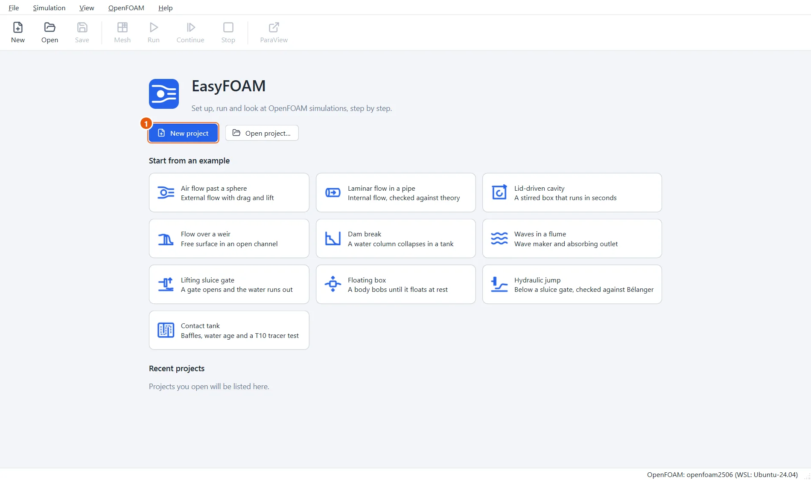
2Make the channel first
Go to the Mesh step before drawing anything. New shapes appear in the middle of the base mesh at a size that fits it, so it pays to have the channel in place first: 6 m long, 0.5 m wide and 1.5 m high, with a solid bed and an open top.
- Corner (min)
0,0,0and Corner (max)6,0.5,1.5. - Cells:
96,8,24. - zMin: name
bed, typewall. - zMax: name
atmosphere, typepatch. - Click Fit.

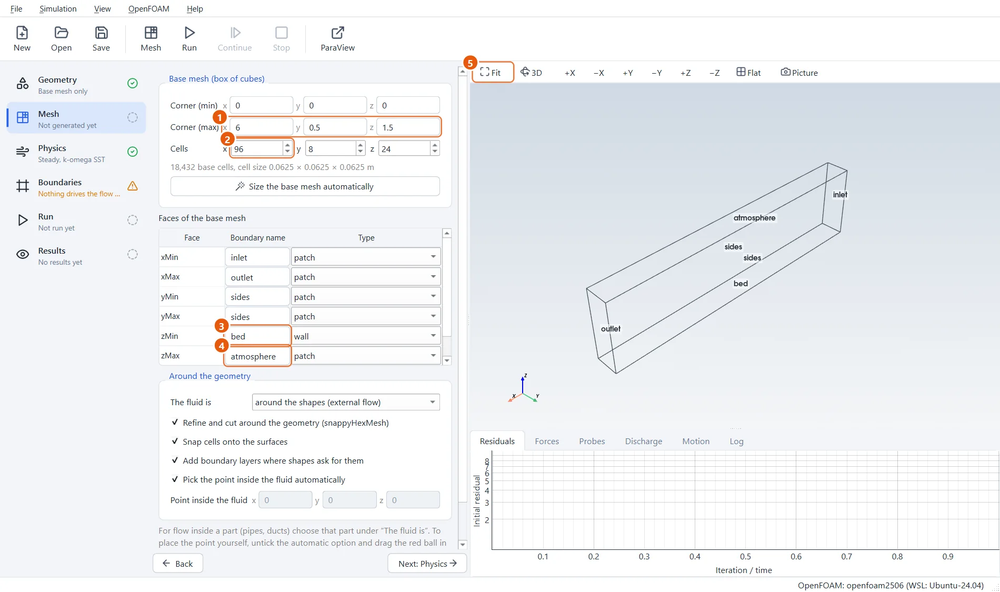
3Draw an outline
Go back to the Geometry step. There are two ways to get a shape: Import brings in a file, Draw makes one here. Choose Draw, then Outline, drawn by hand.
A first outline appears: a small weir standing on the bed, reaching right through both side walls.
- Click Draw and choose Outline, drawn by hand.
- The new shape,
outline1. - Click Draw the outline… to change its shape.

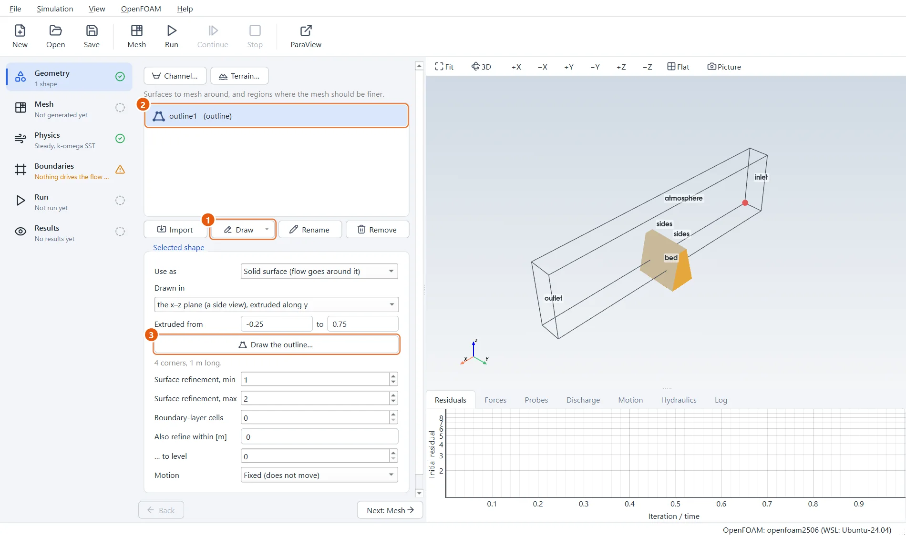
4The sketch pad
The pad shows the channel from the side, with the base mesh as a dashed rectangle so that you can see where the bed and the walls are. Draw with the mouse:
- click to add a corner, or click on a side to add one there;
- drag a corner to move it;
- right-click a corner to remove it;
- the wheel zooms.
For exact sizes, type the corners into the table. Here the weir is 0.5 m high with a 0.3 m wide crest and sloping faces, and its foot lies 0.3 m below the bed so that the mesh is cut cleanly.
- Start from… offers ready-made outlines: choose Trapezoid (weir).
- Drag the corners, or add and remove some.
- Type the corners:
2.3, -0.3, then3.5, -0.3,3.05, 0.5and2.75, 0.5. - Corners snap to this distance; untick Snap to to place them freely.
- Click Use this outline.

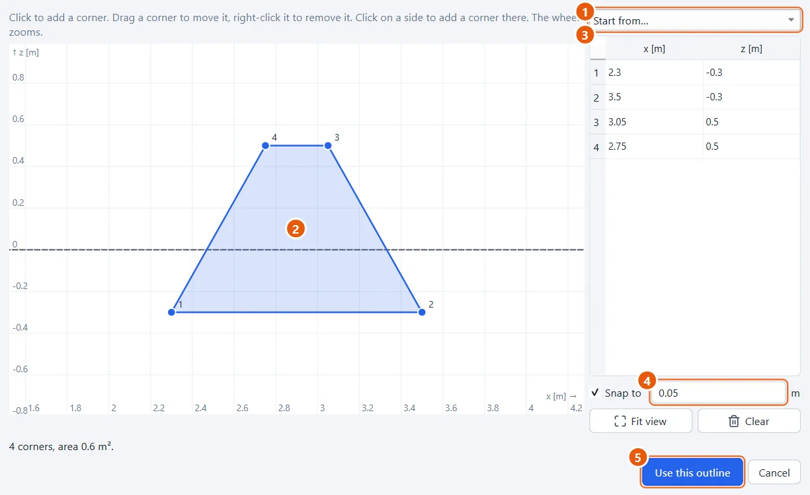
5Push it through the channel
The outline is drawn in the x–z plane, a side view, and extruded along y. Let it start before one side wall and end beyond the other, so that it spans the whole width.
- Drawn in: the x–z plane (a side view), extruded along y.
- Extruded from
-0.25to0.75: a quarter of a metre beyond each wall. - Surface refinement:
1and1.

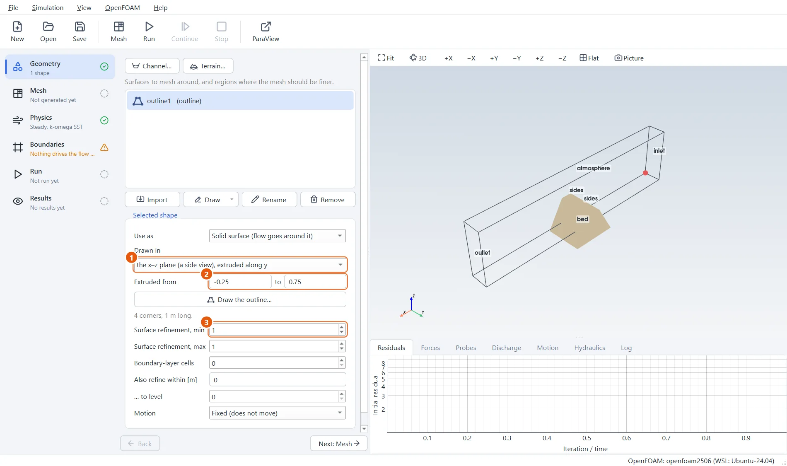
6Add a block and move it with the mouse
Now a second shape: Draw, then Box. With Move and resize with the mouse ticked, the selected shape shows handles in the 3D view. Drag the small balls on the faces of a box to move its faces; drag a sphere to move it; drag the ends of the axis of a cylinder or a cone. The numbers on the left follow, and you can always type them instead.
Place the block downstream of the weir, standing on the bed in the middle of the channel.
- Click Draw and choose Box.
- Move and resize with the mouse in the 3D view is ticked.
- Drag the handles on the box.
- Or type: Corner (min)
4.2,0.15,-0.1and Corner (max)4.4,0.35,0.2. - Click Mesh in the toolbar (or press F5).

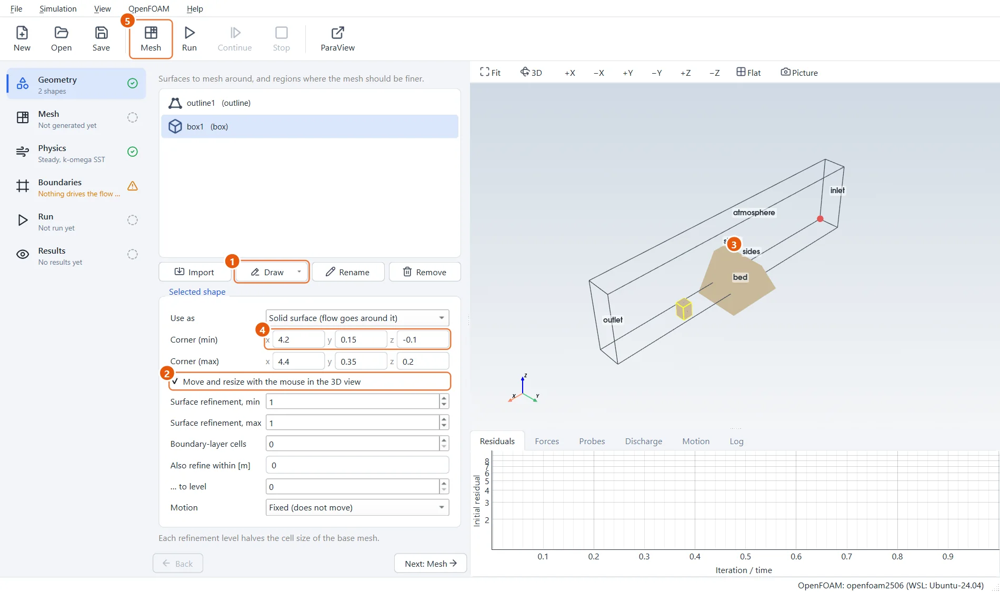
7The mesh
Both shapes are cut out of the channel. Drawn shapes are written into the project as surface files when the mesh is made, so the case is complete without EasyFOAM.
- The number of cells and a green tick.
- The weir and the block in the channel.

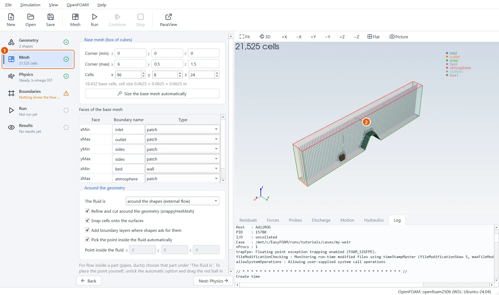
8Water, air and a full reservoir
The rest is the same as for any channel; the tutorial on the weir explains each choice. In the Physics step choose the free-surface flow type, a turbulence model and water, then scroll down and click Add box to fill the reservoir up to the crest.
- Click Add box.
- Type
0,0,0and2.75,0.5,0.5.

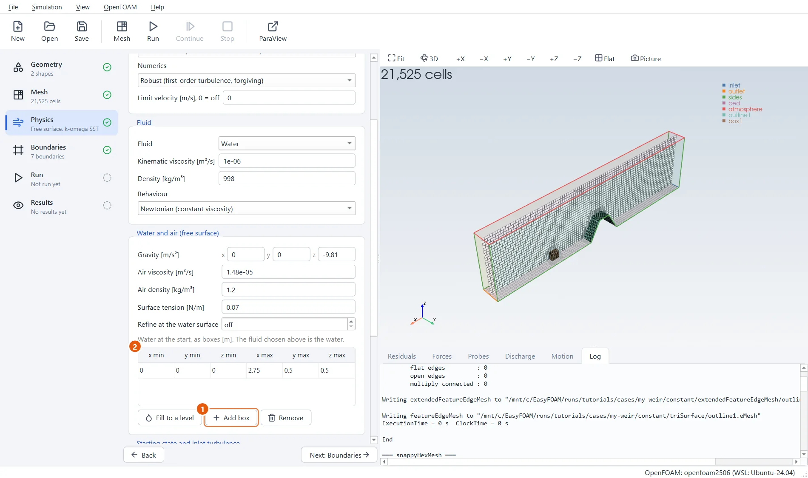
9The inflow and the outflow
Fifty litres a second come in; whatever arrives at the far end leaves. Select outlet as well and set its Condition to Free outflow.
- Select inlet.
- Condition: Inlet by flow rate.
- Flow rate:
0.05m³/s. - Then select outlet and choose Free outflow.

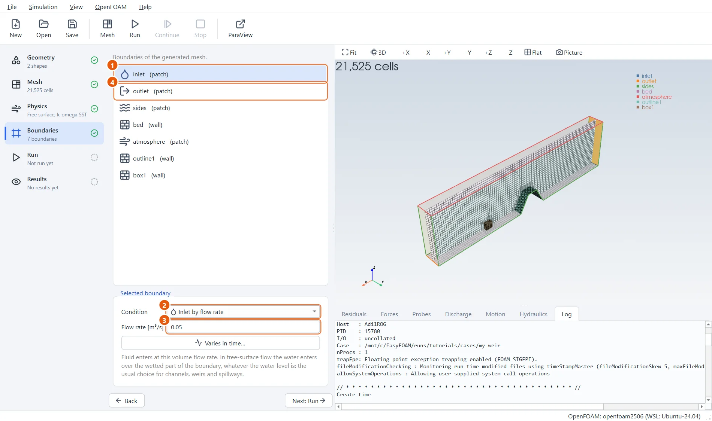
10Run
- End time:
12s. - Time step:
0.001s. - Keep the Courant number below
0.7. - Save every:
0.5s. - Processor cores:
4, or as many as you have. - Click Run in the toolbar (or press F6).

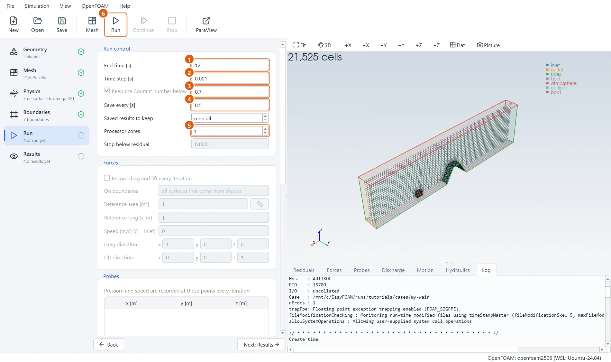
11The flow over what you drew
The water rises behind the weir, spills over the crest, runs down the sloping face and parts around the block on the bed.
- Show: Water surface, coloured by
U, the speed. - Step through Saved time to watch the reservoir fill and the flow settle.

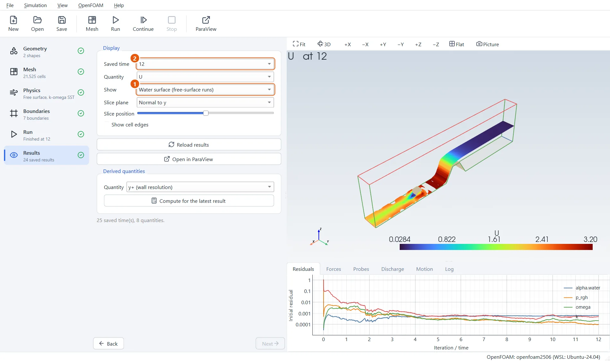
12Try it yourself
- Open the sketch pad again and choose Rounded crest (spillway): the same case with an ogee crest.
- Add a Wedge downstream as a ramp, and choose which way it rises.
- Draw a Cylinder standing in the channel as a bridge pier, and switch on the force monitor in the Run step to see the load on it.
- Give the block a Motion and it becomes a gate; give it a density and it floats.